1. Introducción y Descripción del Proyecto
En los entornos de red académicos y comerciales contemporáneos, la provisión de acceso a Internet inalámbrico para visitantes requiere un estricto control de autenticación, gestión de ancho de banda y aislamiento de clientes. La presente práctica documenta el diseño, la implementación física, la configuración lógica y el proceso de testeo de una solución de Hotspot con Portal Cautivo basado en Vouchers (fichas de acceso precalculadas con límite de tiempo).
Para lograr la arquitectura deseada, se empleó un router empresarial TP-Link Omada ER605 integrado con el software de gestión unificada Omada Controller, acoplado a un router de consumo Steren COM-825 reconfigurado para operar en modo Punto de Acceso / Puente Transparente (Transparent Bridge), desactivando sus servicios DHCP locales para delegar el control de direcciones y autenticación al ER605.
2. Objetivos y Resultados Esperados
Objetivos Generales y Específicos
- General: Implementar y verificar un sistema de Portal Cautivo funcional mediante fichas temporales (vouchers) utilizando la plataforma Omada SD-WAN.
- Segmentación de Red: Migrar el direccionamiento predeterminado a la subred segmentada
192.168.10.0/24. - Integración Multimarca: Configurar el equipo Steren COM-825 como un Access Point neutro sin interferencia de DHCP.
- Pruebas de Testeo: Validar la redirección automática, la generación de lotes de fichas de 6 dígitos e inspección de tráfico en el Dashboard.
Resultados Esperados de la Práctica
- Intercepción de Clientes: Todo cliente inalámbrico que se conecte a la SSID
Fichas_Prácticadebe ser redirigido obligatoriamente al Portal Cautivo antes de obtener salida a Internet. - Consumo de Fichas: Los códigos de 6 dígitos deben cambiar de estado Unused a In-use y caducar tras 1 hora de navegación.
- Estabilidad de Red: Evitar conflictos de IP asegurando que el ER605 sea el único servidor DHCP activo.
3. Arquitectura y Parámetros de Red
Inventario de Hardware y Software
- Router Gateway: TP-Link Omada ER605 v2.20 (Firmware Build 20251029).
- Punto de Acceso: Steren COM-825 (Configuración AP Bridge).
- Servidor Controller: Software Omada Controller ejecutado en Laptop Windows.
- Medio de Conexión: Cableado de Par Trenzado UTP Cat 5e / Cat 6.
Matriz de Direccionamiento IP
| Dispositivo / Elemento | Rol / Función | Dirección IP / Subred |
|---|---|---|
| TP-Link ER605 | Gateway & Servidor DHCP | 192.168.10.1 /24 |
| Laptop Administrador | Servidor Omada Controller | 192.168.10.2 /24 (Estática/Reservada) |
| Steren COM-825 | Access Point Bridge | 192.168.0.1 (DHCP Desactivado) |
| Clientes Inalámbricos | Smartphones / Laptops | 192.168.10.3 - 192.168.10.254 |
4. Procedimiento Metodológico Paso a Paso
Interconexión Física del Equipamiento
Se realiza el ensamble del entorno físico conectando el router TP-Link ER605 mediante su puerto LAN a la laptop del administrador y enlazando un puerto LAN del ER605 hacia la interfaz del Access Point Steren COM-825.
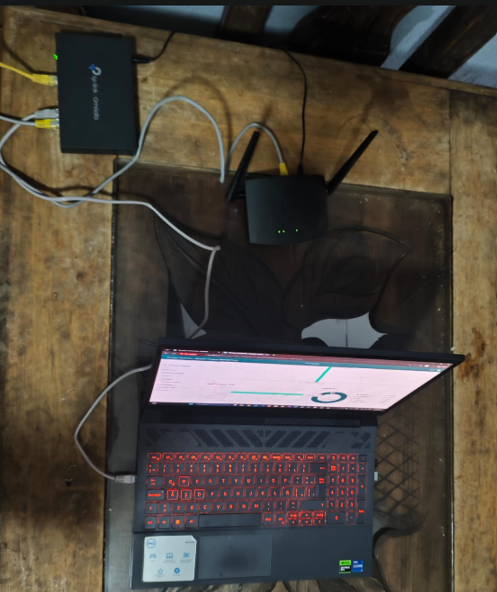
Acceso e Inicio de Sesión en Omada Controller
Se ejecuta la consola web del controlador Omada e inicia sesión con las credenciales administrativas configuradas para el proyecto (Pablo_Verduzco).
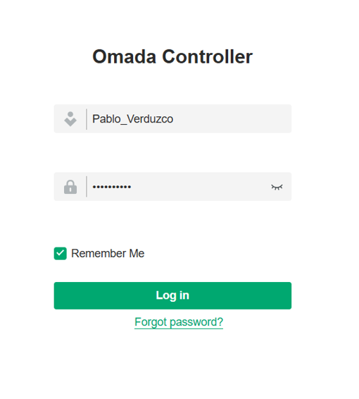
Inicialización del Sitio de Trabajo (Parte 1)
Se crea un nuevo sitio dentro de la plataforma denominado Práctica_Hotspot asignando la zona horaria (UTC-05:00) y la región correspondiente a México.
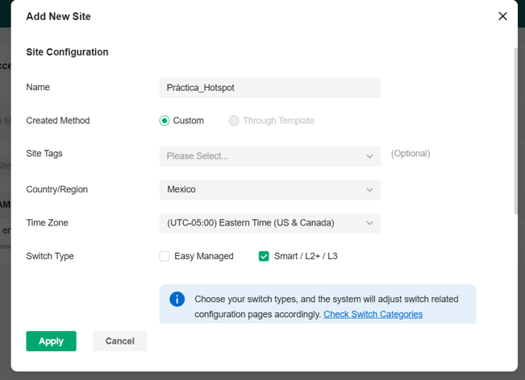
Establecimiento de Credenciales del Sitio (Parte 2)
Se define la cuenta global de administración de dispositivos (Device Account) bajo el usuario del proyecto para asegurar la adopción de la infraestructura.
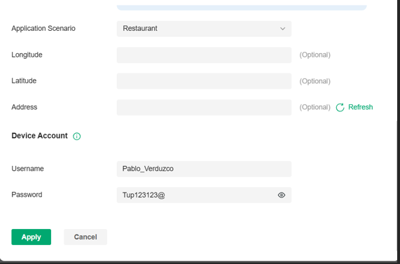
Adopción Inicial del Gateway ER605
En el panel de la lista de dispositivos de Omada, el router ER605 es detectado en la IP por defecto 192.168.0.1 y adoptado reflejando el estado CONNECTED.
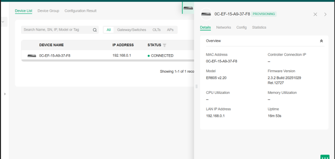
Reestructuración de la Subred LAN
Se modifican los parámetros de la red LAN predeterminada, cambiando la dirección del Gateway de 192.168.0.1 a la subred segmentada 192.168.10.1/24.
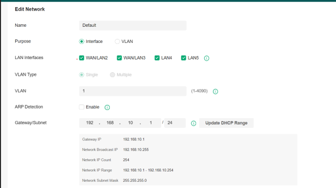
Configuración del Servidor DHCP y DNS
Se habilita el servidor DHCP asignando el rango de direcciones desde 192.168.10.1 hasta 192.168.10.254 y especificando DNS primarios públicos (8.8.8.8 / 1.1.1.1).
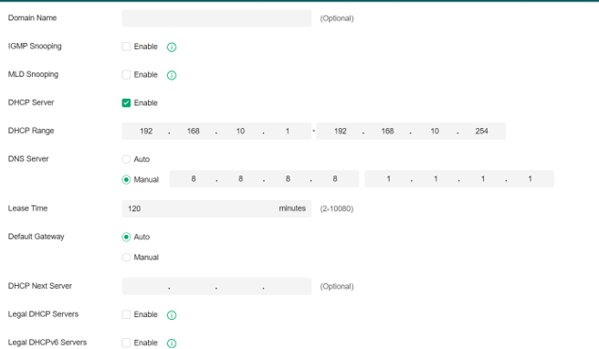
Verificación de IP en la Estación de Trabajo
Se ejecuta la consola de comandos de Windows (cmd) con el comando ipconfig, verificando la asignación de la IP 192.168.10.2 en la laptop.
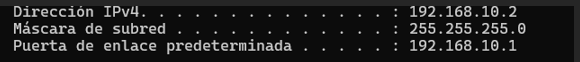
Confirmación del Gateway en la Nueva Subred
Se valida en Omada Controller que el Gateway ER605 ha actualizado correctamente su IP de gestión a 192.168.10.1 manteniendo la conectividad.
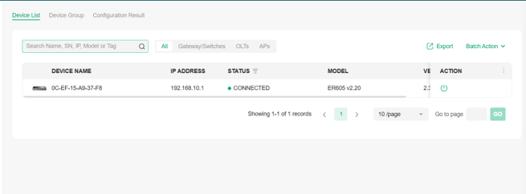
Creación de la Regla de Portal Cautivo
En el menú de autenticación Hotspot, se configura la regla Práctica_Fichas seleccionando el tipo Voucher vinculado a la red LAN Default.
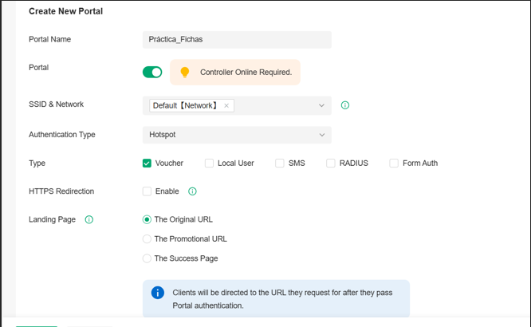
Generación del Lote de Vouchers (Lote_1)
Se genera el lote de fichas Lote_1 estableciendo una cantidad de 10 cupones numéricos de 6 dígitos válidos por 1 hora de navegación.
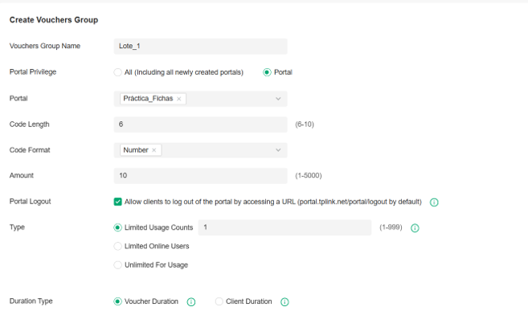
Inspección Estadística del Lote Creado
Se revisa la gráfica de distribución del lote en el controlador, confirmando los 10 Vouchers creados y disponibles.
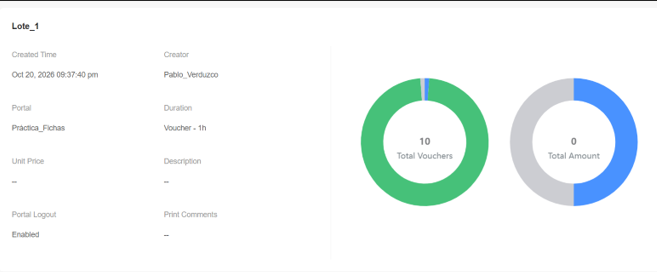
Exportación de Códigos Generados
Se visualiza la tabla detallada de códigos numéricos únicos (ej. 722274, 117430) listos para su entrega a clientes en estado Unused.
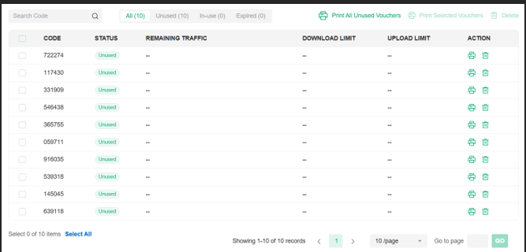
Monitoreo del Dashboard de Autenticación
Se verifica el Dashboard de Omada corroborando la actividad del servicio Hotspot y la métrica de autenticación por Voucher.
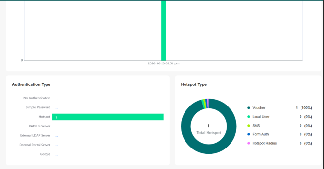
Configuración del SSID en el AP Steren
Se ingresa a la interfaz del equipo Steren COM-825 (192.168.0.1) ajustando el nombre de la red inalámbrica a Fichas_Práctica en modo abierto.
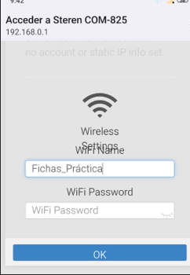
Aplicación de Cambios Inalámbricos en Steren
Se guardan los ajustes de la interfaz de radio del Steren COM-825 emitiendo la señal para los dispositivos clientes.
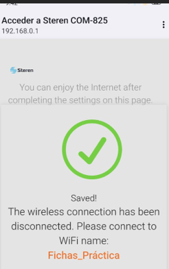
Desactivación del Servidor DHCP del AP Steren
Paso Crítico: Se deshabilita el servidor DHCP interno del Steren COM-825 para evitar colisiones de red y garantizar que la asignación de IP la realice el TP-Link ER605.
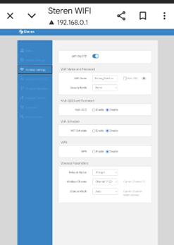
Verificación del Panel Avanzado del Steren
Se revisan las opciones de estado y configuración general del Steren COM-825 para validar su comportamiento transparente en puente.
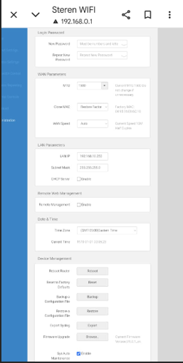
Prueba Final de Autenticación en Smartphone
Un celular cliente se conecta a Fichas_Práctica, es redirigido al Portal Cautivo e ingresa un código de ficha válido habilitando su acceso a Internet.
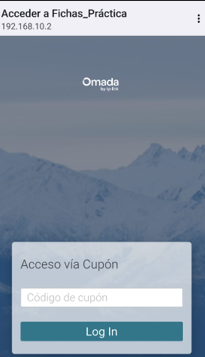
5. Video Demostrativo del Proceso de Testeo
Prueba en tiempo real que demuestra la intercepción del tráfico Wi-Fi, la redirección automática al Portal Cautivo en el dispositivo cliente, la validación del código de cupón de 6 dígitos y el posterior acceso a servicios web de alta velocidad.
6. Análisis de Errores Presentados y Soluciones
Doble Servidor DHCP Activo en la Misma Subred
Síntoma: Los dispositivos móviles obtenían direcciones IP fuera del rango 192.168.10.x (obtenían IPs del segmento 192.168.0.x) y no eran redirigidos al Portal Cautivo.
Causa Raíz: El Access Point Steren COM-825 mantenía encendido su propio servidor DHCP interno compitiendo contra el router ER605.
Solución Implementada: Se ingresó a la administración web del Steren COM-825 (192.168.0.1) y se desactivó manualmente el servicio DHCP, obligándolo a actuar únicamente como un puente (Bridge) inalámbrico puro.
Falta de Redirección Automática al Conectarse al Wi-Fi
Síntoma: Al conectar el smartphone a la red Fichas_Práctica, el navegador del sistema no saltaba automáticamente a la pantalla de inicio de sesión de Omada.
Causa Raíz: Omada Controller no tenía habilitada la interceptación de tráfico para la interfaz inalámbrica predeterminada.
Solución Implementada: Se revisó la regla de Portal Cautivo Práctica_Fichas dentro del controlador asegurando que estuviera vinculada a la red Default [Network] y activando la opción Controller Online Required.
Pérdida de Comunicación con el ER605 tras el Cambio de IP
Síntoma: Al cambiar la subred de 192.168.0.1 a 192.168.10.1, la laptop perdió temporalmente el acceso a la interfaz web de administración.
Causa Raíz: La tarjeta de red de la laptop conservaba en caché la dirección IP anterior suministrada antes del cambio de segmento.
Solución Implementada: Se ejecutaron los comandos ipconfig /release e ipconfig /renew desde la consola de Windows para solicitar una nueva dirección IP al servidor DHCP en la subred 192.168.10.0/24.
7. Conclusiones y Recomendaciones Técnicas
Conclusiones del Proyecto
Conclusión Grupal: Se demostró exitosamente que es viable estructurar infraestructuras de red de alta seguridad integrando hardware empresarial con dispositivos de consumo comercial mediante la correcta separación de capas de red (Capa 2 y Capa 3). La eliminación de servidores DHCP secundarios en puntos de acceso puente es vital para la integridad del control de accesos.
Aporte Individual: El testeo exhaustivo con cupones temporales asegura que las empresas o instituciones universitarias puedan monetizar o normar el tráfico Wi-Fi previniendo el consumo desmedido de ancho de banda por usuarios no autorizados.
Recomendaciones Técnicas
- Certificados SSL/TLS: Instalar un certificado SSL válido en el controlador Omada para evitar advertencias de seguridad HTTPS al momento de la redirección automática en móviles.
- VLANs Dedicadas: Implementar VLANs de tráfico de invitados aisladas de la VLAN de gestión administrativa de la infraestructura.
- Límites de Ancho de Banda: Asignar perfiles de velocidad (ej. 5 Mbps de bajada / 2 Mbps de subida) a cada Voucher generado para asegurar equidad en la red.